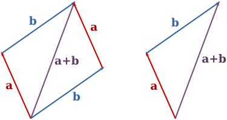
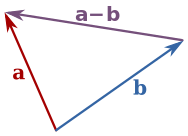
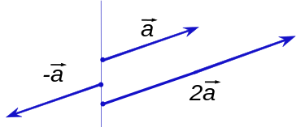
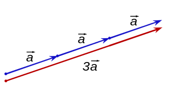

W tej sekcji wykorzystywany jest układ współrzędnych kartezjańskich z wektorami bazowymi:
przy czym przyjmuje się, że wszystkie wektory mają początek układu za wspólny punkt zaczepienia. Wektor a będzie zapisywany jako:
Równość
Dwa wektory są równe, jeżeli mają równe wartości i kierunki (wraz ze zwrotami). Równoważnie będą one równe, jeśli odpowiadające współrzędne tych wektorów będą równe. Tak więc dwa wektory:
oraz
są równe, jeżeli:
Dodawanie i odejmowanie
Suma wektorów a i b to wektor dany wzorem:
Dodawanie może być przedstawione graficznie jako umieszczenie punktu początkowego strzałki b w punkcie końcowym strzałki a, następnie narysowanie strzałki od punktu początkowego a do punktu końcowego b. Narysowana strzałka przedstawia wektor a+b jak pokazano niżej:

Ten sposób dodawania nazywana jest niekiedy metodą równoległoboku, ponieważ a i b są bokami równoległoboku, natomiast a+b jest jedną z jego przekątnych. Jeżeli a i b są wektorami zaczepionymi o tym samym punkcie zaczepienia, to będzie on również punktem zaczepienia a+b. Można sprawdzić geometrycznie, iż a + b = b + a oraz (a + b) + c =a + (b + c).
Różnica a i b dana jest jako:
Odejmowanie dwóch wektorów może być zdefiniowane geometrycznie w następujący sposób: aby odjąć b od a należy umieścić początki a i b w tym samym punkcie, a następnie narysować strzałkę od punktu końcowego b do punktu końcowego a. Strzałka ta reprezentuje wektor a-b jak pokazano niżej:

Mnożenie przez skalar
Wektor może być również pomnożony lub przeskalowany za pomocą liczby rzeczywistej r. W kontekście standardowej algebry wektorów liczby te nazywane są często skalarami (od skalowania), aby odróżnić je od wektorów. Działanie mnożenia wektora przez skalar nazywane jest czasem mnożeniem skalarnym. Wektor wynikowy to:
Intuicyjnie mnożenie przez skalar r rozciąga wektor o współczynnik równy r. Geometrycznie może to być przedstawione (przynajmniej w przypadku, gdy r jest całkowite) przez umieszczenie r kopii wektora w linii tak, by punkt końcowy jednego wektora był punktem początkowym kolejnego.
Jeżeli r jest ujemne, to zmienia się kierunek (zwrot) wektora: obraca się on o kąt 180°. Niżej znajdują się dwa przykłady (dla r=-1 i r=2):

Mnożenie skalarne wektora o współczynniku 3 rozciąga wektor:

Mnożenie przez skalar jest rozdzielne względem dodawania wektorów następującym sensie: r(a + b) = ra + rb, dla dowolnych wektorów a, b oraz wszystkich skalarów r.
Można pokazać, że a - b = a + (-1)b.
Iloczyn Skalarny
Iloczyn skalarny może być zdefiniowany jako suma iloczynów składowych każdego wektora:
Długość
Długość, moduł lub norma wektora a jest oznaczana symbolem ‖a‖ lub rzadziej |a|. Nie powinno się tego mylić z wartością bezwzględną ("normą" skalarną). Czasami błędnie nazywana jest wartością wektora.
Długość wektora a może być obliczona za pomocą normy euklidesowej.
Wektor zerowy
Wektor zerowy to wektor o długości zero, zapisany jako (0, 0, 0). Można go zapisać jako 0. Nie ma on kierunku i nie może być znormalizowany. Suma wektora zerowego i dowolnego wektora a jest równa a, tj. 0 + a = a.
Iloczyn wektorowy
Iloczyn wektorowy może być zapisany jako: